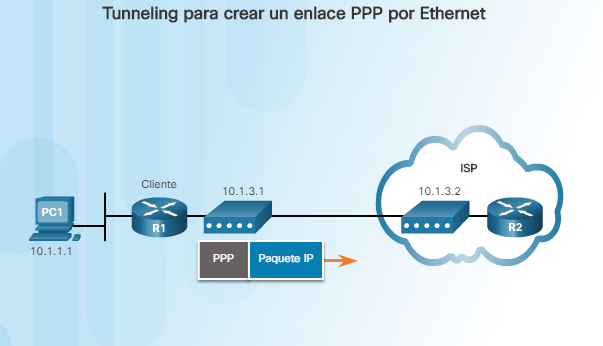
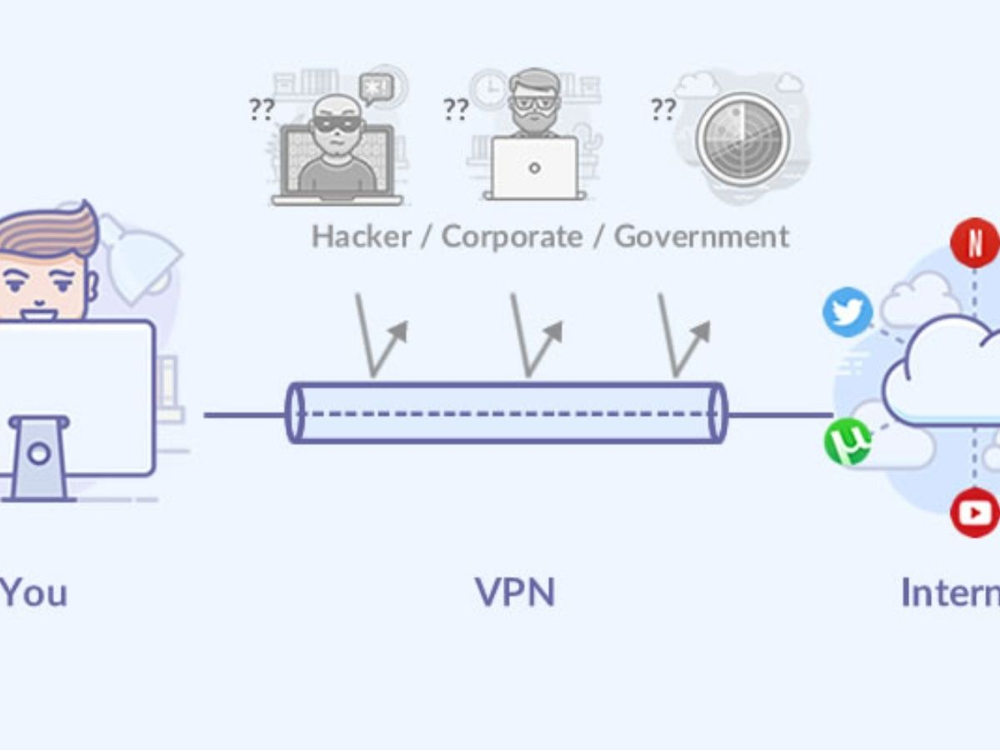

8.3. Conexiones de sucursal.
8.3.1 Conexiones de acceso remoto.
Las conexiones de acceso remoto son aquellas conexiones que nos permiten conectarnos entre dispositivos a traves de la red mediante una conexión segura, y de calidad, la conexión remota más conocida es el VPN.
8.3.2 PPPoE.

El protocolo PPPoE como sus siglas indican es un protocolo punto a punto sobre internet, en resumidas cuentas es un protocolo de encapsulacion PPP sobre la capa de internet. Es utilizado para proveer conexión de banda ancha mediante servicios de cablemodem y DSL. Este ofrece las ventajas del protocolo PPP como son la autenticación, cifrado, mantención y compresión. En esencia, es un protocolo, que permite implementar una capa IP sobre una conexión entre dos puertos Ethernet, pero con las características de software del protocolo PPP, por lo que es utilizado para virtualmente "marcar" a otra máquina dentro de la red Ethernet, logrando una conexión "serial" con ella, con la que se pueden transferir paquetes IP, basado en las características del protocolo PPP.
Nota: desde el router de casa es posible sacar el usuario y contraseña del proveedor mediante el router, un switch en modo espejo y un pc con wireshark snifando información, pudiendo cambiar así el router de la compañía por otro. (en algunos casos hay más servicios y puede ser que estos datos vayan cifrados)
8.3.3 VPN.

Una red privada virtual es una tecnologia de red de ordenadores que permite una extensión segura de la área local (LAN) sobre una red publica o no controlada. Permite que se cree un tunel cifrado entre el cliente y el servidor para así poder transferir datos de manera segura. Otros de los usos más comunes es conectar empresas entre si que están alejadas para así compartir la misma topología de red.
La conexión VPN a través de Internet es técnicamente una unión wide area network (WAN) entre los sitios, pero al usuario le parece como si fuera un enlace privado: de allí la designación virtual private network.
8.3.4 GRE.
El GRE es un protocolo para el establecimiento de túneles a través de Internet. Está definido en la RFC 1701 y en la RFC 1702, pudiendo transportar hasta 20 protocolos del nivel de red (nivel 3 del modelo OSI) distintos.
Características
Permite emplear protocolos de encaminamiento especializados que obtengan el camino óptimo entre los extremos de la comunicación.
Soporta la secuencialidad de paquetes y la creación de túneles sobre redes de alta velocidad.
Permite establecer políticas de encaminamiento y seguridad.
8.3.5 eBGP
El protocolo BGP se utiliza para intercambiar información de enrutamiento para Internet y es el protocolo utilizado entre el ISP y proveedores de contenido (como twitch o Youtube).